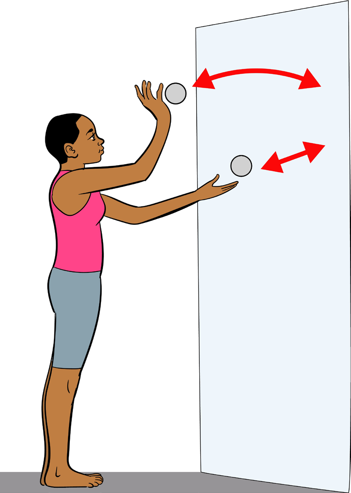

Activity 3.13
- 1.Perform the single leg stance test to measure your body balance.
- 2.Perform various exercises to improve your body balance.
Question:
Why do we need to keep eyes open in single leg stance exercise?
Coordination
It is the ability to use all sense organs with other body parts in performing motor tasks smoothly and accurately. The alternate hand wall toss test is one of the tests for coordination.
Exercises for improving coordination
The exercises for improving coordination includes, rope skipping, ball or balloon toss, balance exercises, target exercises, juggling and dribbling.
The following steps indicate how to perform the alternate hand wall toss:
- (i) Take a tennis ball or a baseball;
- (ii) Stand a certain distance towards a smooth wall at least 2 m;
- (iii) Throw the ball from one hand in an underarm action against the wall and trap it with the opposite hand, as shown in Figure 3.10;
- (iv) Throw it back against the wall with the opposite hand then trap it with the initial hand; and
- (v) Keep doing without dropping a ball for a number of attempts or for a set time period at least 1 minute.
